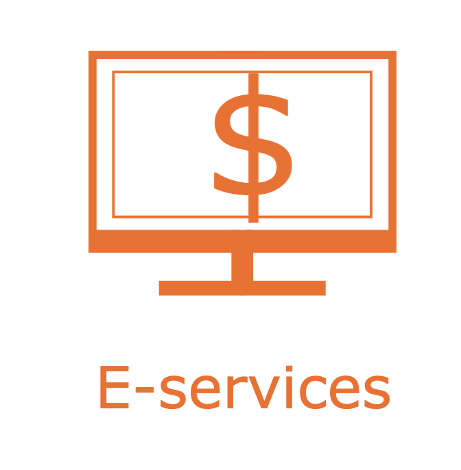

Front-End Developer & Web Designer | Paid Internship
Project Details:
Maintained the RIT Student Portal, Tiger Center.
Web App that displays important information to students
Calendar, Searching for Classes, Academic History, GPA Calculator, Dining Hours and
Locations, Comparing Classes, and general RIT Resources.
Wrote HTML/CSS, TypeScript (the app was made in Angular), and designed icons and logos.
RIT E-Services link icon I created for the app's Resources page.

Also created formal proposals for new features, wrote documentation for all features, and utilized
the agile methodology and Jira.
Timeline
We began the process of adding new features for future teams to continue. It was a three
month co-op.
Team:
The team was me and four other co-op students. I was the web designer. There were three Web
Developers and one Business Analyst.
Our team also had a group of very helpful and kind advisors that we presented weekly updates
to and reached out to for help whenever needed.
Challenges I Faced:
I went into this co-op with very little experience in the industry. It was my first official
programming job (I had done some internships before but this was the first job). Had to learn how to
work in sprints, use work boards (like Jira and Trello) build and deploy the app (.war file) to
various environments (local, development, test, production) from scratch.
For the first few weeks it seemed very daunting and scary. I was at first worried that I
wouldn't have time to learn it, as there was a lot to learn and understand how to do.
Thankfully, the advisors were more than happy to make sure everyone understood, and so,
through practice and help from them and my teammates, I was able to get the hang of it!
This was also the first experience I'd had making changes based on user feedback. Many of the
changes we implelemted were based on input from users of the app.
Before this, I'd make design and layout changes based on what I thought, and so I had to
change my design strategies and make sure I was making changes that would work best for the
users.
One of the final things I worked on during this internship was create a rough draft revision
of the support forms that the users use to send us issues they have. The new questions we
came up with allowed the user to give more specific information about
them and their issues than the form allowed at the time, making it easier for future teams
(it was towards the end of the internship/co-op so all we had time to create was a Qualtrics
survey with the new questions for the next team to work on and have implemented)
to recreate and solve user issues.
If I could do it over again, I'd make sure I was as open to as many new ideas and feedback as
possible, as I am very grateful to this company for all they taught me and helped me learn!
Exceeding Expectations:
One instance I think could qualify as going beyond their expectations was my CSS work. I helped the
developers style their features with mock-ups, fixed some design issues in the app, and made some of the
pages more mobile friendly. At one point in the co-op the developers' advisor (each role had a separate
advisor), said to me that I'd made more CSS changes than some of the previous web designers, as many of them
chose more of a graphic design role.